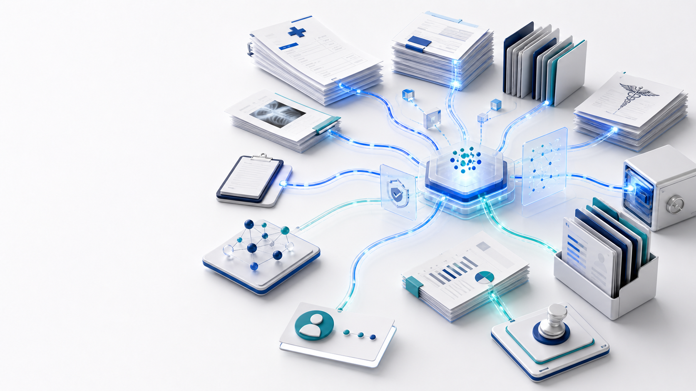

Nova FWA
Fraud, waste, and abuse operations
Nova FWA turns claim risk into governed evidence.
An assistive operating layer for scoring, explaining, routing, reviewing, and auditing healthcare FWA risk.
Governed
From claim documents to a governed risk operating layer
Problem framing
FWA risk programs break when evidence stays fragmented.
Claims teams need the reason, the source lineage, the review owner, and a defensible audit trail in one operating flow.
Risk signals must be tied to concrete evidence, not just a score.
Medical review, investigation, and QA need shared context.
Human outcomes should feed rule, model, and workflow governance.

Claims
Review
A single evidence spine connects signals, review, and audit
Risk architecture
Seven evidence layers become one operating decision record.
The platform does not just calculate risk; it organizes the evidence required to review it.

L1-L7
Audit trail
Claim, rule, model, clinical, provider, and routing signals converge into audit-ready evidence
Operating model
Review work stays human, but the evidence flow becomes systematic.
Nova FWA links scoring, casework, medical review, QA feedback, and governance without replacing customer adjudication.
01
Score
Generate evidence-backed risk.
02
Review
Route to human operators.
03
Govern
Record outcomes and audit trail.

Human review
Governance
Assistive review, medical evidence, QA feedback, and governance remain connected
Positioning
A control layer for FWA operations, not an adjudication engine.
Nova FWA surfaces suspicious patterns, prepares evidence packages, routes cases, and records audit trails. Final denial, approval, or fraud determination remains in the customer-controlled human process.
Operating thesisScore, review, and govern from the same evidence record.